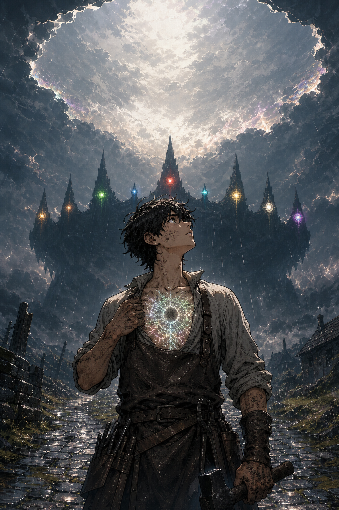

The theme: unity without erasure. No race is the monster — the monster is the hunger, and the cure is a name said back. A multi-race epic built from day one for manga, anime, movies, card games, and PC games: the power system is a card system first, the leads are realm-faces second, and the world is the IP.

Read the pilot
Three chapters are scripted (12 pages each — one chapter = one single issue = one anime episode), and chapters 4–6 are locked as a canon outline. The pilot ends with the King's first line, the grove's Re-Oath, and the Hollow's first word.
How this site works
This is the project's index page, deployed straight from the repository on GitHub Pages — the repo is the site. The tabs open the same markdown files the team writes from: Manga (the pilot, chapter by chapter), Story Bible (saga, races, cast book, power system), Characters (design sheets), Locations (world guides), and Future Scope (the franchise roadmap). New chapters and scopes land here with every push.
The Manga — Season 1 (Volumes 1–3)
The main series is the spine: the same world, told panel by panel, in the order the realms wake. Ch. 1–2 = Vol. 1 “The Scar” · Ch. 3–5 = Vol. 2 “The Withering” · Ch. 6+ = Vol. 3 “The First Crown”.
The Story Bible
The canon — the fixed facts every medium builds on. The canon spine (what to protect) is in file 05, §I.
Characters
The cast, organized for the art team, the card game, and the reader. Design sheets here; the 625-name cast book lives in the Story Bible.
Locations
Where the story lives: the town that starts it, and the nine realms that wake to end it.
Future Scope — The Franchise Roadmap
AURELION is not a story that gets adapted — it's a world that gets built. The saga is the spine; the scope is the flesh. Open the file to see the anime, manga, movie, TCG, and PC-game roadmaps, the 10-year IP timeline, and the sequel scope.